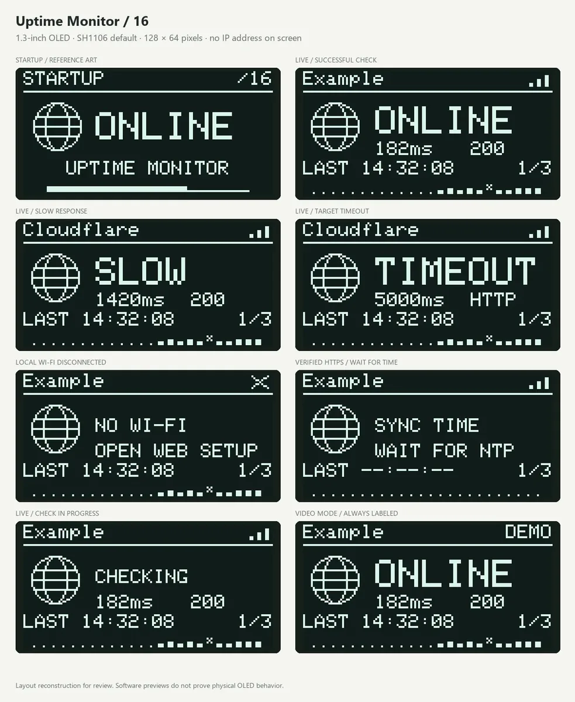

Project archive33 / FIRMWARE / HARDWARE SYSTEM
Website Uptime Monitor
An OLED monitor for website reachability, response time, last check, and recent status history.

01 / PURPOSEThe interaction
The screen combines reachability, response time, last check and recent history for a configured website.
02 / HARDWAREMy contribution
The source includes ESP32-S3 firmware, button controls, an OLED layout and a local configuration page.
03 / EVIDENCEDocumentation and status
Firmware and documentation package prepared; no physical build test is claimed here.
The source package records firmware · enclosure files · video for the Website Uptime Monitor project.
The available visual is a firmware interface preview or documentation diagram; it is not a product photograph.
DOCUMENTATION / 33Local web-control preview · supplied project evidence OLED status preview · supplied project evidence
Inside the build record.
